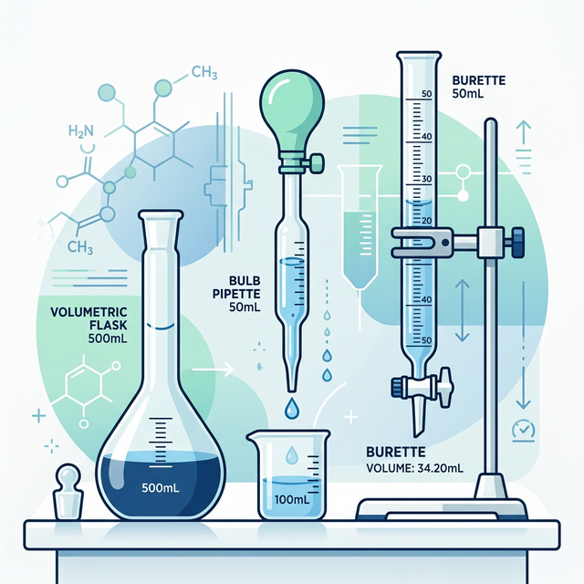

🧪 Glassware Verification
PKKK/200/008 — Verifikasi Alat Radas (ISO 4787)
Gravimetric verification procedure for volumetric flasks, bulb pipettes, and burettes. Ensures volumetric accuracy using deionized water and temperature correction.

◈ Key Parameters
15-30°C
Room Temperature
35-85%
Rel. Humidity
≤0.5°C
∆T (Before/After)
◈ Glassware Types & Frequency
| Glassware | Method | Readings | Verification Interval |
|---|---|---|---|
| Volumetric Flask | Gravimetric (fill to meniscus) | 3 readings + 1 empty | 3 years (if undamaged, no frosting) |
| Bulb Pipette | Gravimetric (drain by gravity + touch) | 5 readings | 12 months |
| Burette | Gravimetric (drain measured volume) | 5 readings | 12 months |
◈ 1. Balance Resolution Requirements (ISO 4787)
The analytical balance used must meet minimum resolution requirements strictly based on the nominal volume of the glassware (flask, pipette, or burette) under test.
| Nominal Volume ($V$) | Min. Resolution (mg) | Balance Type |
|---|---|---|
| $V \le 10 \, \text{mL}$ | 0.01 | Semi-micro analytical balance |
| $10 \, \text{mL} < V \le 1000 \, \text{mL}$ | 0.1 | Analytical balance |
| $V > 1000 \, \text{mL}$ | 10.0 | Precision top-loading balance |
PROCEDURES BY GLASSWARE TYPE
◈ 2A. Volumetric Flask (In Method - 'TC')
- Visual inspection: Verify cleanliness, inner surface condition (no frosting, scratches or chemical etching), and inscription legibility.
- Ensure the flask is completely dry internally. Wear lint-free gloves to prevent transferring oils and heat from hands.
- Place the empty, dry flask on the calibrated balance. Record the empty weight ($M_{E}$).
- Fill the flask carefully with deionized water (equilibrated to room temperature) until about $1 \text{cm}$ below the graduation mark.
- Use a dropper to add water drop-by-drop until the lowest point of the meniscus exactly touches the top edge of the graduation line (read at eye level).
- Ensure no water droplets adhere to the inside of the neck above the meniscus line. Wipe with lint-free paper if necessary.
- Record the water temperature ($T_{W1}$) in the dispensing container before testing.
- Place the filled flask on the balance and record the filled weight ($M_{F1}$).
- Empty the flask, wash, and dry it completely. Repeat steps 3–8 for readings 2 and 3 ($M_{F2}, M_{F3}$).
- Record the final water temperature ($T_{W2}$) after testing is complete. The temperature drift must be $\le 0.5^{\circ}\text{C}$.
◈ 2B. Bulb Pipette (Ex Method - 'TD')
- Place a receiving vessel (e.g., Erlenmeyer flask with a small amount of water to humidify it and covered with a watch glass) on the balance. Tare the balance.
- Fill the bulb pipette with deionized water slightly above the graduation mark. Dry the outside of the tip with lint-free tissue.
- Adjust the meniscus so the lowest point touches the upper edge of the graduation line.
- Hold the pipette vertically and allow the water to drain freely by gravity into the receiving vessel.
- When the continuous flow stops, rest the tip of the pipette against the inner wall of the vessel for approximately 5 seconds.
- Draw the tip upwards along the wall to detach any hanging drop. Do NOT blow out the remaining liquid in the tip.
- Record the mass of the dispensed water. Tare the balance.
- Repeat for a total of 5 consecutive measurements.
◈ 2C. Burette (Ex Method - 'TD')
- Mount the burette perfectly vertically. Fill it with deionized water to slightly above the zero mark.
- Open the stopcock to fill the tip completely (ensure no air bubbles are trapped).
- Adjust the meniscus exactly to the zero mark. Remove any hanging drop at the tip.
- Place the tared receiving vessel under the burette.
- Fully open the stopcock and dispense water into the vessel until the meniscus is approximately $5 \text{mm}$ above the target test volume graduation.
- Wait for exactly 30 seconds for drainage from the burette walls.
- Carefully adjust the meniscus to exactly touch the target graduation mark. Touch the tip to the vessel wall to remove any hanging drop.
- Record the dispensed mass.
- Repeat steps 1-8 for a total of 5 measurements at the required points (e.g., $10 \text{mL}$, $25 \text{mL}$, $50 \text{mL}$).
◈ 3. Calculations & Temperature Correction
The apparent mass of the water must be converted into volume at the reference temperature (usually $20^{\circ}\text{C}$) using the $Z$-factor.
$M_{Water} = M_{Filled} - M_{Empty}$
$V_{20} = M_{Water} \times Z$
Absolute Error ($E$) = $|V_{20} - V_{Nominal}|$
$V_{20} = M_{Water} \times Z$
Absolute Error ($E$) = $|V_{20} - V_{Nominal}|$
- • $M_{Water}$: True mass of water (for Ex methods, this is simply the dispensed mass)
- • $Z$-factor: Correction factor accounting for the density of water at the measured temperature and air buoyancy (sourced from ISO 4787 standard tables).
- • $V_{20}$: Calculated true volume at reference temperature ($20^{\circ}\text{C}$).
✅ Acceptance Criteria
The Absolute Error ($E$) for all recorded measurements must be $\le$ Maximum Permissible Error (MPE) stated by the manufacturer for the specific Class A/B glassware.
◈ 4. Corrective Action & Reporting
- ⚠️ If the absolute error exceeds the MPE limit → repeat the verification process (must be done by a different analyst).
- ❌ If the second verification also fails → the volumetric glassware is deemed inaccurate and must be permanently removed from quantitative use.
- 🏷️ Label the failed glassware as "OUT OF SERVICE / FOR QUALITATIVE USE ONLY".
- 📋 Record results in PKK/048 and apply the UPM Temperature Correction Worksheet.
◈ Forms & References
- 📋 PKKK/200/008 — Prosedur Verifikasi Alat Radas di Makmal
- 📋 UPM Temperature Correction Worksheet
- 📖 ISO 4787 — Glassware volumetric instruments